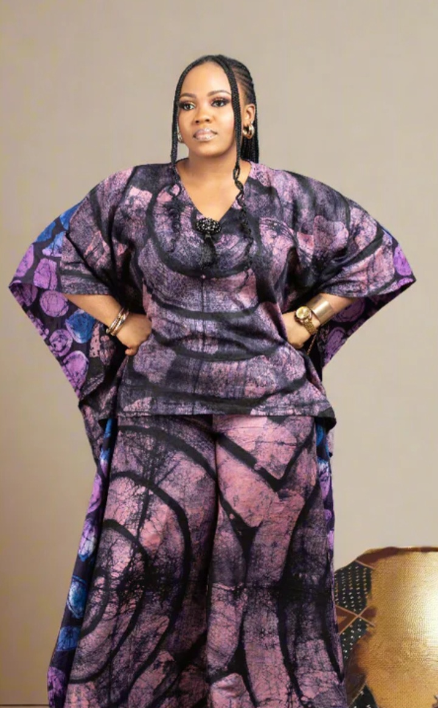

Lagos Heritage Showcase
A private viewing of our 'Adire Silk' collection at the Eko Hotel. Invitation only for the Onyx Circle.
The Journey of the Silk Tunic
A private viewing of our 'Adire Silk' collection at the Eko Hotel. Invitation only for the Onyx Circle.

The grand debut of our heritage textiles at the Ladi Kwali Hall, showcasing the fusion of traditional dye and modern silhouette.

An educational exhibition in Benue State focusing on the 'Adire Eleko' resist-dye technique and sustainable fashion.